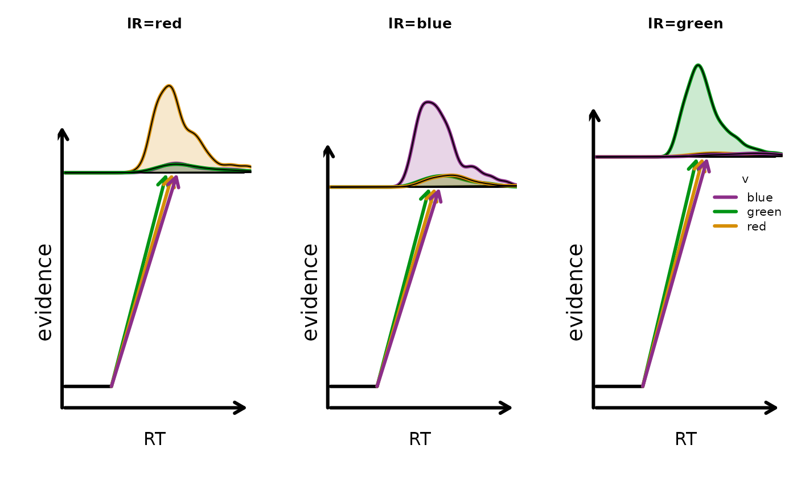
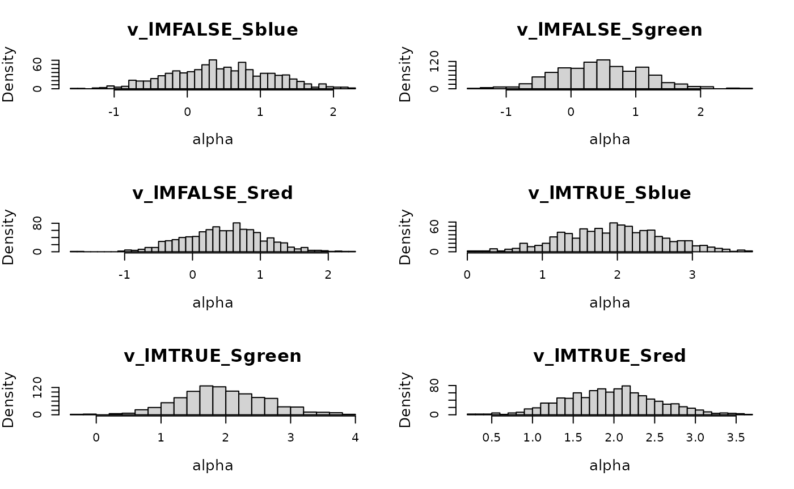
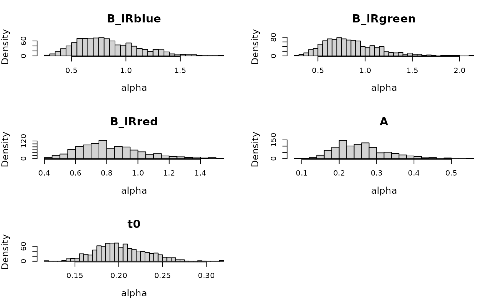
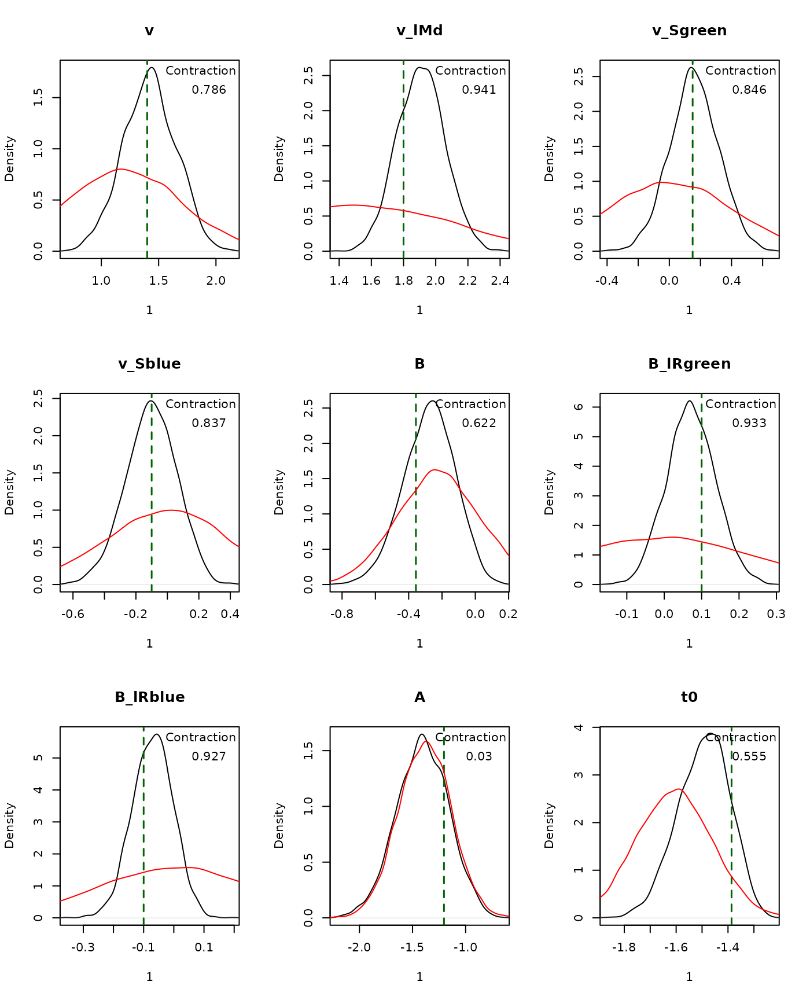
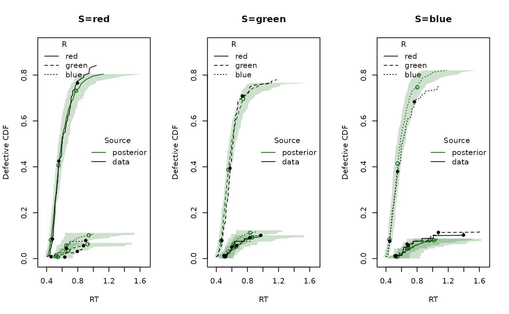

Introduction
This vignette shows a single-subject race-model workflow in EMC2 using the Linear Ballistic Accumulator (LBA). In EMC2, the Racing Diffusion Model (RDM) and Lognormal Race Model (LNR) are also race models and use a similar design logic. Here we use a simulated Stroop task to illustrate how to set this up.
The steps are:
- Specify a race-model design with multiple responses and stimulus identities
- Inspect sampled parameters and their mapping to design cells
- Simulate data
- Define priors and create an
emcobject - Fit the model
- Summarize posterior estimates and run posterior predictive checks
For parameter details and transformations, see ?LBA.
1. Specify a Race-Model Design
We define a three-choice Stroop task with stimulus identity
S (red, green, blue)
and matching response levels. In race models, EMC2 internally
builds an accumulator factor lR (one accumulator per
response option). We define matchfun to indicate whether
the stimulus identity matches each accumulator, which creates the latent
match factor lM. By adding S to the drift rate
we account for differences in color processing. Similarly, by adding
B ~ LR we account for a-priori preferences for responding
certain colors.
matchfun <- function(d) d$S == d$lR
# "Average/difference" coding for the TRUE/FALSE lM factor
ADmat <- matrix(c(-1/2, 1/2), ncol = 1, dimnames = list(NULL, "d"))
design_lba <- design(
factors = list(subjects = 1, S = c("red", "green", "blue")),
Rlevels = c("red", "green", "blue"),
matchfun = matchfun,
formula = list(v ~ lM + S, B ~ lR, A ~ 1, t0 ~ 1, sv ~ 1),
contrasts = list(v = list(lM = ADmat)),
constants = c(sv = log(1)),
model = LBA
)##
## Sampled Parameters:
## [1] "v" "v_lMd" "v_Sgreen" "v_Sblue" "B" "B_lRgreen"
## [7] "B_lRblue" "A" "t0"
##
## Design Matrices:
## $v
## lM S v v_lMd v_Sgreen v_Sblue
## TRUE red 1 0.5 0 0
## FALSE red 1 -0.5 0 0
## FALSE green 1 -0.5 1 0
## TRUE green 1 0.5 1 0
## FALSE blue 1 -0.5 0 1
## TRUE blue 1 0.5 0 1
##
## $B
## lR B B_lRgreen B_lRblue
## red 1 0 0
## green 1 1 0
## blue 1 0 1
##
## $A
## A
## 1
##
## $t0
## t0
## 1
##
## $sv
## sv
## 1design() combines model and experimental structure into
an emc.design object.
2. Inspect Parameters and Mapping
sampled_pars() returns the free parameters implied by
the design.
sampled_pars(design_lba)## v v_lMd v_Sgreen v_Sblue B B_lRgreen B_lRblue A
## 0 0 0 0 0 0 0 0
## t0
## 0mapped_pars() shows how those parameters map back to
design cells. Here:
-
v_lMdcaptures match-vs-mismatch drift differences -
v_Sgreenandv_Sbluecapture stimulus-identity shifts in drift -
B_lRgreenandB_lRbluecapture response-specific threshold bias
mapped_pars(design_lba)## $v
## lM S
## TRUE red : v + 0.5 * v_lMd
## FALSE red : v - 0.5 * v_lMd
## FALSE green : v - 0.5 * v_lMd + v_Sgreen
## TRUE green : v + 0.5 * v_lMd + v_Sgreen
## FALSE blue : v - 0.5 * v_lMd + v_Sblue
## TRUE blue : v + 0.5 * v_lMd + v_Sblue
##
## $B
## lR
## red : exp(B)
## green : exp(B + B_lRgreen)
## blue : exp(B + B_lRblue)In this example we simulate data, but you can replace this with your empirical data. We first define true parameter values on the transformed scale and inspect the numeric mapping:
p_vector <- sampled_pars(design_lba)
p_vector[] <- c(
v = 1.4,
v_lMd = 1.8,
v_Sgreen = 0.15,
v_Sblue = -0.1,
B = log(0.7),
B_lRgreen = 0.1,
B_lRblue = -0.1,
A = log(0.3),
t0 = log(0.25)
)
mapped_pars(design_lba, p_vector)## S lR lM v sv B A t0 b
## 1 red red TRUE 2.30 1 0.700 0.3 0.25 1.000
## 2 red green FALSE 0.50 1 0.774 0.3 0.25 1.074
## 3 red blue FALSE 0.50 1 0.633 0.3 0.25 0.933
## 4 green red FALSE 0.65 1 0.700 0.3 0.25 1.000
## 5 green green TRUE 2.45 1 0.774 0.3 0.25 1.074
## 6 green blue FALSE 0.65 1 0.633 0.3 0.25 0.933
## 7 blue red FALSE 0.40 1 0.700 0.3 0.25 1.000
## 8 blue green FALSE 0.40 1 0.774 0.3 0.25 1.074
## 9 blue blue TRUE 2.20 1 0.633 0.3 0.25 0.933To visualize the implied design-level behavior:
plot_design(design_lba, p_vector = p_vector, factors = list(v = "S", B = "lR"), plot_factor = "lR", layout = c(1,3))
3. Simulate Data
make_data() simulates trial-level responses and response
times from the specified design and parameter values.
dat <- make_data(parameters = p_vector, design = design_lba, n_trials = 80)A quick check of the simulated defective densities by stimulus identity:
plot_density(dat, factors = "S", layout = c(1,3))4. Set Prior and Build EMC Object
prior() defines prior settings for parameters in this
design. As always, be mindful that some parameters are represented on
transformed scales, see ?LBA.
prior_lba <- prior(
design = design_lba,
type = "single",
pmean = c(
v = 1.2,
v_lMd = 1.5,
v_Sgreen = 0,
v_Sblue = 0,
B = log(0.8),
B_lRgreen = 0,
B_lRblue = 0,
A = log(0.25),
t0 = log(0.2)
),
psd = c(
v = .5,
v_lMd = .6,
v_Sgreen = .4,
v_Sblue = .4,
B = .25,
B_lRgreen = .25,
B_lRblue = .25,
A = .25,
t0 = .15
)
)Inspecting implied priors is a useful sanity check:
plot(prior_lba, N = 1e3)
Next we construct the emc object.
make_emc() combines data, design, and prior into the object
expected by fit().
emc <- make_emc(dat, design_lba, prior_list = prior_lba, type = "single")## Processing data set 1## Likelihood speedup factor: 2 (122 unique trials)5. Fit
The following call is how you can fit this model and save intermediate output:
emc <- fit(emc, fileName = "data/race-models.RData")6. Summarize and Check Model Fit
summary() reports quantiles, Rhat, and ESS
for estimated parameters:
summary(emc)##
## alpha 1
## 2.5% 50% 97.5% Rhat ESS
## v 0.971 1.423 1.850 1.000 2841
## v_lMd 1.622 1.908 2.199 1.000 3000
## v_Sgreen -0.155 0.159 0.465 1.001 2722
## v_Sblue -0.432 -0.101 0.197 1.001 2991
## B -0.592 -0.270 0.007 1.000 2912
## B_lRgreen -0.053 0.071 0.201 1.001 2974
## B_lRblue -0.206 -0.068 0.060 1.001 2816
## A -1.897 -1.405 -0.937 1.000 2807
## t0 -1.699 -1.488 -1.320 1.000 3000plot_pars() compares posterior densities with the
generating values:
plot_pars(emc, true_pars = p_vector, use_prior_lim = FALSE)
Finally, we generate posterior predictive datasets and compare CDFs:
pp <- predict(emc)
This same race-model workflow extends naturally to the other race
models RDM and LNR; the core steps
(design() -> prior() ->
make_emc() -> fit() -> predictive
checks) remain the same.